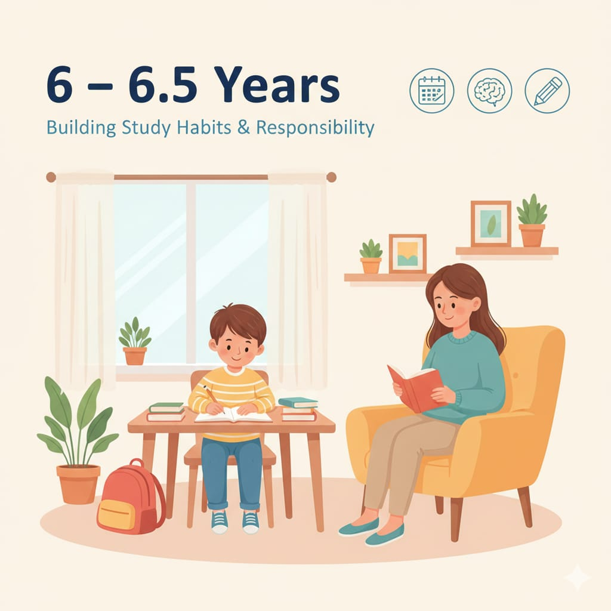

6 – 6.5 سنوات
بداية تثبيت عادة المذاكرة + تقليل المشتتات + بناء مسؤولية دراسية مستقرة.

مهم: في السن ده الطفل محتاج نظام ثابت مش ضغط عالي.
بداية تثبيت عادة المذاكرة + تقليل المشتتات + بناء مسؤولية دراسية مستقرة.
